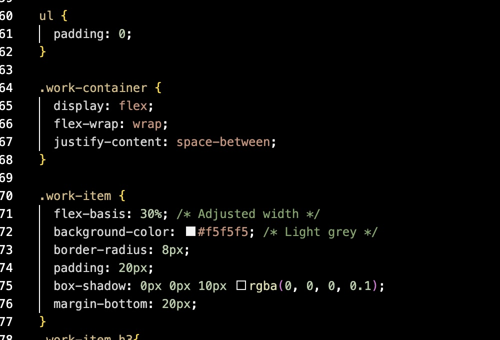
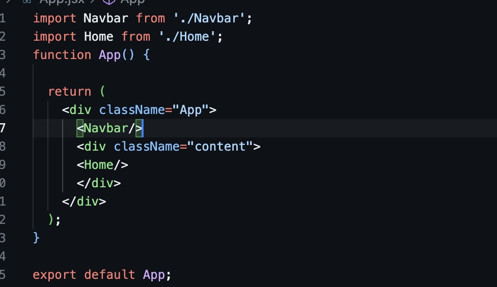
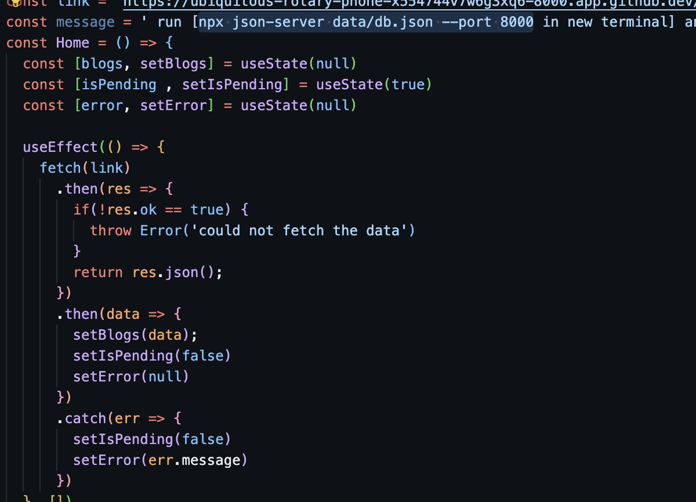

Software Engineer I
Company: Mastercard
SQL, Alteryx, Power Platform and Domo for Data Visualization
Responsibilities:
- Used Alteryx to prep, cleanse, and scale data into tabular format for data visualization
- Used Domo to extract, transform, and load data for data for visualization which was used to design and build dashboards of key metrics and KPIs for stakeholders across upper-management
- Used SQL and NoSQL ETL for data summarizations and built new data tables to be used for metrics and visualization which has accumulated 2000 stakeholders’ views
- Designed and built an automation system with Power Automate to collect and retrieve static file data to be loaded into ETL systems, modifying Red Shift AWS ETL
- Built and delivered Power BI dashboards from Microsoft Stream Data to showcase in-house video metrics

Software/Electrical Engineer
Company: Alabama Power
Tools: Python, SQL, Pandas, Seaborn, HTML/CSS and Automation
Responsibilities:
- Learned the basics of Power Flow Distribution, FISR, SCADA, and general software related to fault restoration and fault location for Project execution, Process improvement, and Code clarity
- In charge of making python scripts for generating reports with automated email reports with color coding with features focused on Quality, System evolution, and Usability
- Design Jupyter notebooks with dataframes using pandas, seaborn for visuals, scikit and numpy for models
- Made SQL queries to generate dynamic reports which included and data analysis and modeling
- Able to make changes to MySQL Database, write queries, and code general projects related to reports and coding projects related to emailing team reports to support and field engine

Freelance Software Engineer
Company: Self-Employed
JavaScript, React for Front-End, MongoDB, Express, Git/GitHub for Version Control, and NodeJS for package management
Responsibilities:
- Proficient in JavaScript, HTML/CSS, PHP for dynamic front-end interfaces and robust server-side apps.
- Skilled in Bootstrap, jQuery, Sass, and React JS for responsive, cross-browser designs.
- Experienced in making PRs (Pull Requests) and Branching concepts for collaboration across my team environment optimizing iterations and release performance with high Git proficiency.
- Competent in React, Express, MongoDB, and NodeJS for scalable server-side solutions for webpages.
- Skilled in Jest Unit Testing for codebase reliability and code smells in an agile Scrum environment.
- Proficient in applying algorithms for complex problem-solving and performance optimization.
